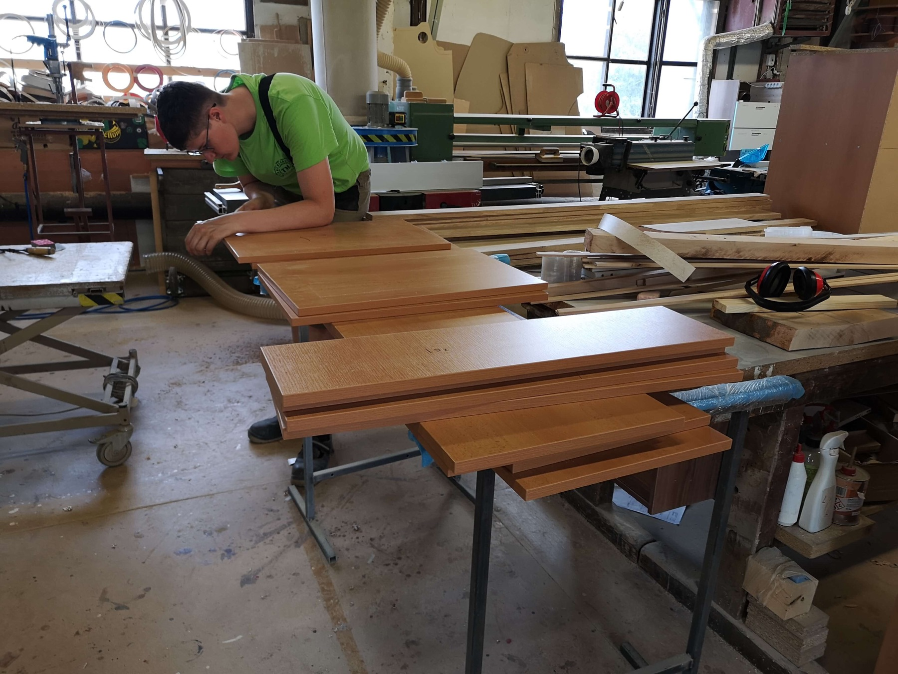
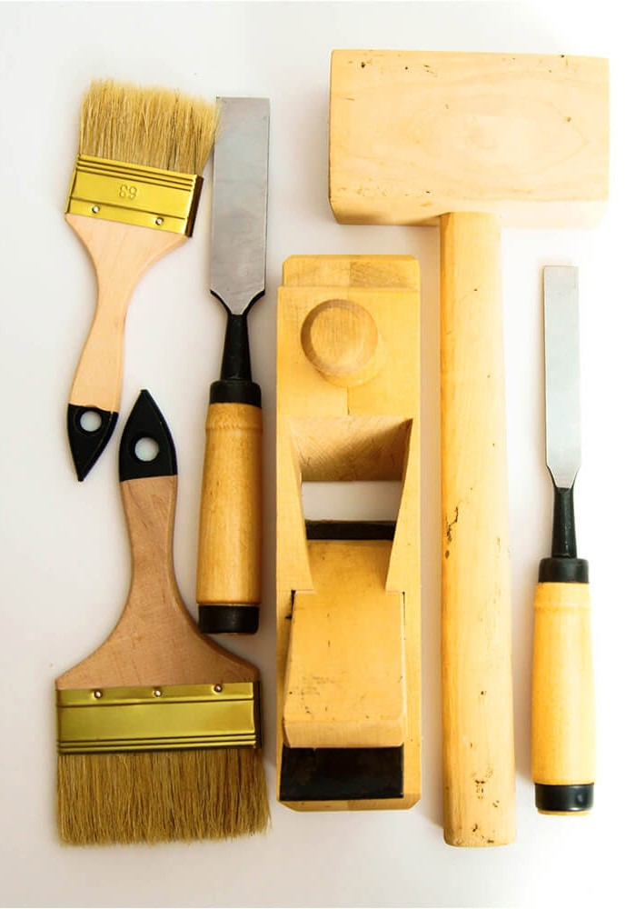

Truhlář na výrobu z masivu
Výroba nábytku, dveří a schodišť v naší dílně v Brně-Řečkovicích. Hodí se zkušenost s masivem a manuální zručnost.
Baví vás práce, za kterou je vidět výsledek – hotový nábytek nebo dveře z masivu? Hledáme šikovné lidi do dílny i na montáže.

Výroba nábytku, dveří a schodišť v naší dílně v Brně-Řečkovicích. Hodí se zkušenost s masivem a manuální zručnost.
Montáže kuchyní, skříní a dalšího nábytku u zákazníků v Brně a okolí. Uvítáme praxi a přesah do truhlařiny.
Nastartujte svou praxi u nás. Čerstvé absolventy ochotně zaučíme.

Zavolejte na +420 777 847 089 nebo pošlete životopis na jiri@truhlarstvi-marecek.cz.